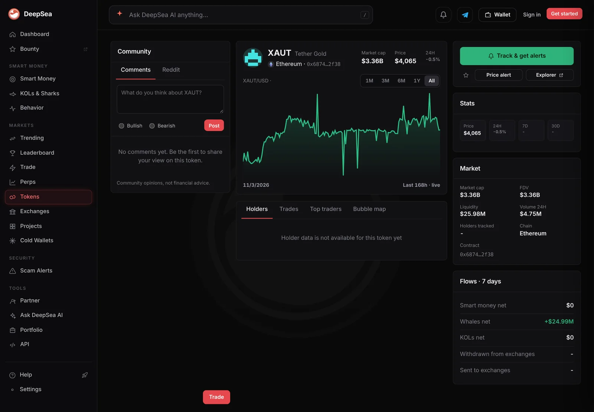

Sharks sold $19 million of gold tokens in a day, a day after buying $8.1 million of XAUt
A handful of big wallets sold $10.5 million of PAXG and $8.5 million of Tether Gold and bought back $2.8 million. Both tokens slipped about 0.9%.
Key points
- In the 24 hours to 6:36 a.m. ET on November 10, shark wallets sold $10.53 million of PAXG and bought $767,451, in 23 trades by two wallets, DeepSea's live feed shows.
- They sold $8.49 million of Tether Gold (XAUt) and bought $2.07 million, in 36 trades by three wallets. Across both, the net was minus $16.18 million.
- A day earlier, the same feed showed sharks buying $8.11 million of XAUt. CoinGecko had both gold tokens down about 0.9% at 6:49 a.m. ET.
 What DeepSea's data shows
What DeepSea's data shows
DeepSea's live feed adds up trades by sharks, the large wallets it tracks, over the past hour and day. In the 24 hours to 6:36 a.m. ET on November 10, two of the three biggest selling rows on Ethereum were gold tokens, after an Aave deposit token.
PAXG, Paxos's gold token: $10,525,353 sold, $767,451 bought, 23 trades, two wallets. XAUt, Tether's gold token: $8,491,293 sold, $2,072,900 bought, 36 trades, three wallets. Together that is $19.02 million out and $2.84 million in, a net of minus $16.18 million. Each token tracks the price of one troy ounce of gold.
DeepSea's XAUt page showed a market cap of $3.36 billion, $25.97 million of liquidity and $4.74 million of 24-hour volume. Its PAXG page showed $27.86 million of liquidity and $1.72 million of volume, both well below what the sharks sold. That suggests much of the selling went through routes DeepSea's volume figure does not count, such as larger venues or direct swaps. DeepSea does not say which.
The week as a whole still leans the other way for XAUt. At the time of our 6:58 a.m. ET screenshot, the page showed a 7-day whale net flow of plus $24.99 million, so the latest day of selling has not erased the earlier buying.

Data: DeepSea (desea.io), checked November 10, 2026, 6:36 a.m. ET.
A reversal in one day
On November 9 we reported the opposite: in the 24 hours to 6:36 a.m. ET that day, DeepSea's feed showed 80 shark wallets buying $8.11 million of XAUt and selling just $47,430, while PAXG saw $1.88 million of selling. This time the XAUt selling is larger than that whole day of buying, and it came from far fewer wallets.
Put side by side, the two days run in opposite directions. On November 9, about $8.1 million of XAUt went into shark wallets. By November 10, about $8.5 million had gone back out, almost all of it from three wallets, while two wallets dumped $10.5 million of PAXG.
Shark trades in gold tokens, 24 hours to 6:36 a.m. ET, November 10
US$ million
Source: DeepSea live feed.
What the chain and the market show
Etherscan's page for the XAUt contract, read at 6:49 a.m. ET, confirms that the address DeepSea tracks is Tether Gold's token. Its ten latest transactions came within about 19 minutes, and four were sent from addresses Etherscan labels as Gate or Bybit deposit wallets, the addresses exchanges give customers for deposits.
Prices barely moved. CoinGecko showed PAXG at $4,060.93, down 0.87% in 24 hours, and XAUt at $4,056.77, down 0.92%. Ether was down 1.2% and bitcoin 0.2%.

Why it matters
Gold tokens let crypto holders move into gold without leaving the blockchain. When sharks pile in, it can be a sign of caution. When a few of them sell in size a day later, it can mean profit taking, a move back to dollars or simply a few large accounts rebalancing. DeepSea's numbers show size and direction, not reasons.
For readers who follow gold through crypto, the 7-day flow is the better guide than one day. DeepSea still shows XAUt whales as net buyers for the week. The U.S. October inflation report is due at 8:30 a.m. ET on November 10, and gold often moves on it.
LC Insight analysis
This section is our reading of the facts above, not a statement of fact.
- We think the small number of wallets is the key detail: two wallets moved $10.5 million of PAXG, so this is a few large accounts, not a broad exit from gold.
- Selling far larger than DeepSea's counted DEX volume suggests the coins went to bigger venues. Exchange balances over the next day would show whether that gold was sold for dollars.
- XAUt's 7-day whale flow is still plus $24.99 million, so one day of shark selling has not undone the week's gold buying. We would treat a second straight day of selling as the real signal.
What's next
- Whether shark gold selling continues after the 8:30 a.m. ET CPI report
- Whether XAUt and PAXG prices stay close to each other
- DeepSea's 7-day whale flows for both tokens
Disclaimer. This article is based on public information and the sources listed below as of the update time shown. It is for information only and is not investment, legal or tax advice. Figures may change as companies and authorities publish new data.
Sources
- DeepSea, live feed 24-hour shark aggregates (made November 10, 2026, 6:35 a.m. ET)
- DeepSea, XAUt (Ethereum) token page (read November 10, 2026, 6:40 a.m. ET)
- DeepSea, PAXG (Ethereum) token page (read November 10, 2026, 6:40 a.m. ET)
- Etherscan, Tether Gold: XAUt Token contract page (snapshot November 10, 2026, 6:49 a.m. ET)
- CoinGecko, PAX Gold (PAXG) price (read November 10, 2026, 6:49 a.m. ET)
- CoinGecko, Tether Gold (XAUt) price (read November 10, 2026, 6:49 a.m. ET)